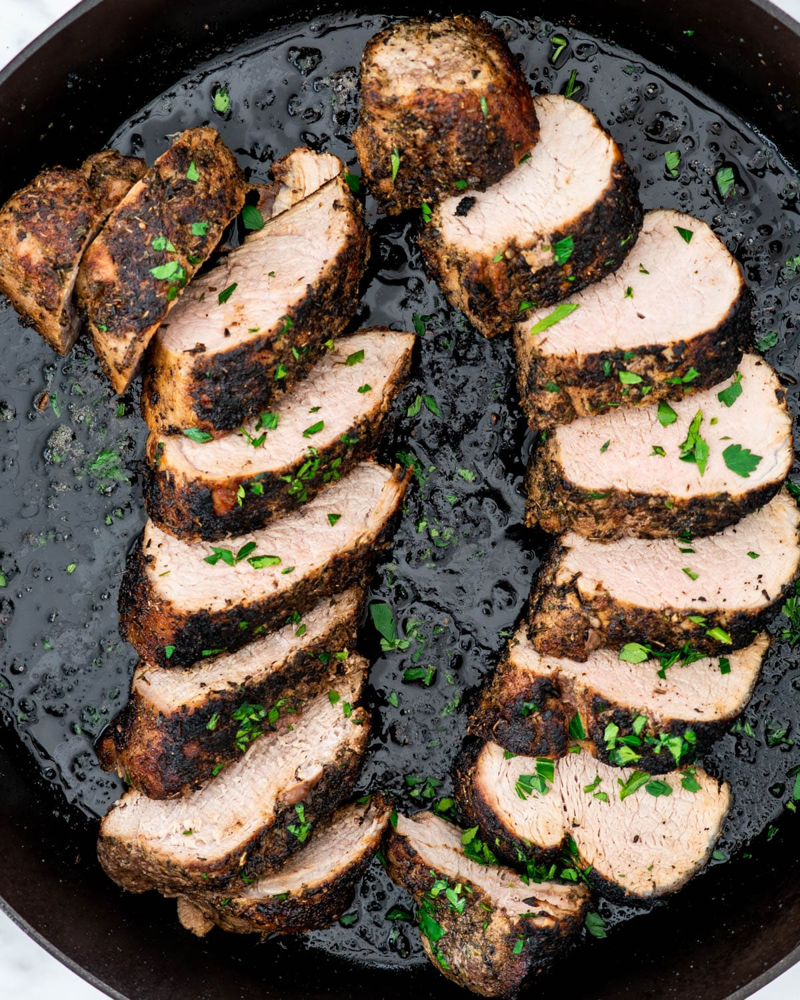

Pork Tenderloin

Description
Succulent Pork Tenderloin.
Ingredients
- 1 lbs cut of Pork Tenderloin
- Seasoning
- Olive Oil
Steps
- Season and set out tenderloin 1 hour before cooking
- In a large pan add a small layer of olive oil on medium-high heat
- Fry each side for 2 1/2 minutes to create a nice sear
- Remove from pan and place on baking sheet
- Place in oven that has been preheated to 375 until internal tempature reaches 155
- Let rest for 5 minutes and then cut into 1/2 slices
- Serves with favorite side dishes
Return to Main Page